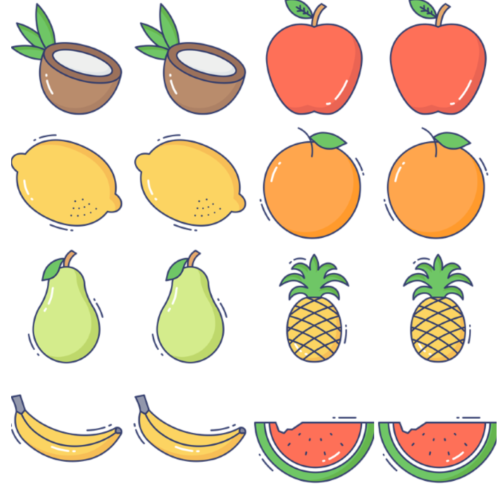

¡Bienvenido a Fruit Match!
Es un divertido juego de memoria donde el objetivo es encontrar las parejas de frutas idénticas entre una serie de cartas volteadas. Cada vez que se destapa una carta, aparece una fruta diferente. El jugador debe recordar la ubicación de las cartas para hacer coincidir las frutas iguales. A medida que avanzas, el número de cartas aumenta, haciendo el juego más desafiante.